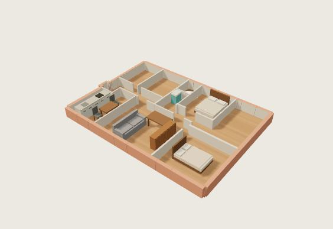
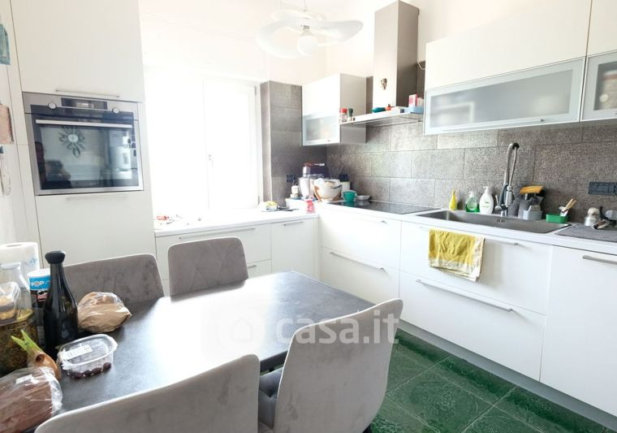
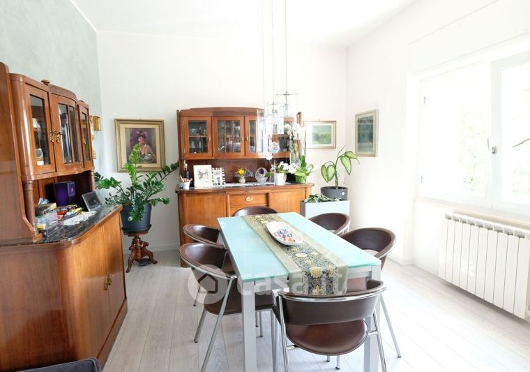
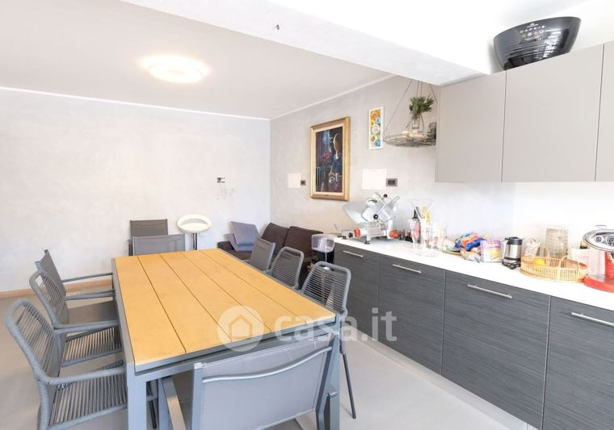
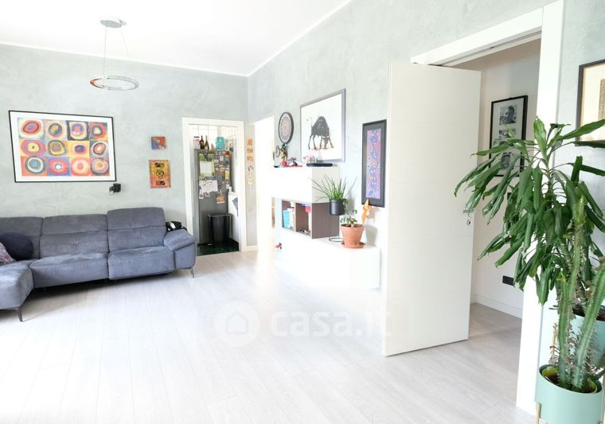
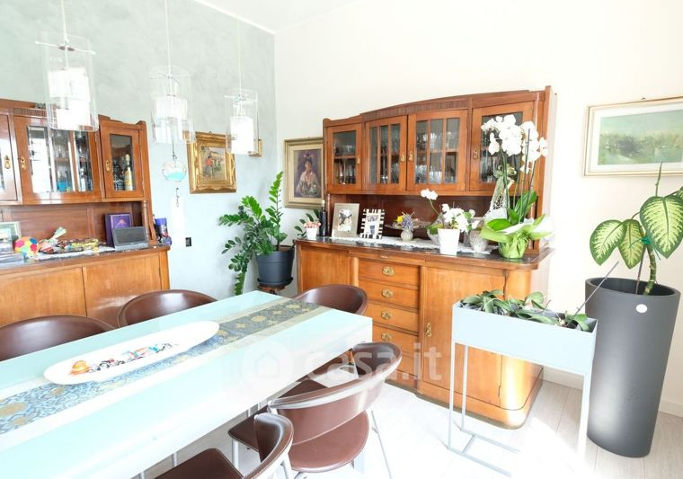
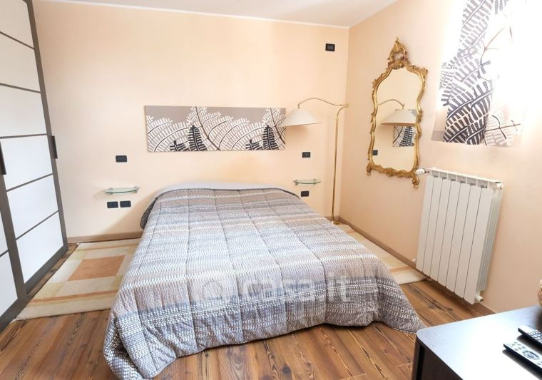
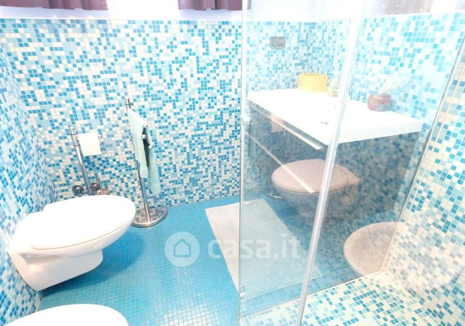

Via Risano / Raute
Piante, arredi e copertura
Cucina chiara, tavolo di legno con sedie grigie, divano grigio, credenza in legno, letto chiaro e mosaico turchese in bagno.





















Viste disponibili
Esterno, Piano abitativo, Seminterrato, Piscina fuori terra · vista autonoma, Tettoia e intercapedine · tavola autonoma
Confronto con la pianta
La sovrapposizione permette di controllare sulla tavola originale i contorni, i muri e le aperture rappresentati.


Tavole dell’annuncio
- Piano abitativo e sistemazioni esterne Originale
- Piano interrato Originale
- Inquadramento del lotto Originale
- Intercapedine e tettoia Originale


Parti omesse o con posizione incerta
- Posizione esatta di tettoia e intercapedine rispetto alla casa. Il contorno ha una vista autonoma.
- Posizione e confini del giardino, parcheggi e della piscina. La piscina fotografata è mostrata in una vista autonoma.
Proporzioni e finiture
I contorni e le divisioni seguono le tavole indicate. Le misure assolute prive di quota, alcune aperture, le altezze e le dimensioni dei mobili sono stime.